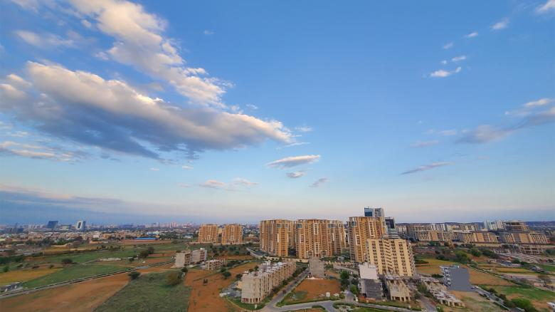

When India imposed a nationwide lockdown a week ago, it was designed to stop the imminent spread of the novel coronavirus.
But grinding this country of 1.3 billion people to a near halt has also provided a temporary remedy to another pressing health issue: suffocating pollution levels.

The world's largest lockdown means all factories, markets, shops, and places of worship are now closed, most public transport suspended and construction work halted, as India asks its citizens to stay home and practice social distancing. So far, India has more than 1,300 confirmed cases of Covid-19, including 35 deaths.
Already, data shows that the main cities are recording much lower levels of harmful microscopic particulate matter known as PM 2.5, and of nitrogen dioxide, which is released by vehicles and power plants.
PM 2.5, which is smaller than 2.5 micrometers in diameter, is considered particularly dangerous as it can lodge deep into the lungs and pass into other organs and the bloodstream, causing serious health risks.
The sudden fall in pollutants and the subsequent blue skies signal a dramatic shift for India -- which has 21 of the world's 30 most polluted cities, according to the IQAir AirVisual's 2019 World Air Quality Report.
Even before the national lockdown started on March 25, the phased shutdowns in India were having an impact.
During the first three weeks of March, the average nitrogen dioxide levels declined by 40-50% in the cities of Mumbai, Pune and Ahmedabad, compared with the same period in 2018 and 2019, said Gufran Beig, a scientist with the System of Air Quality and Weather Forecasting And Research (SAFAR) under India's Ministry of Earth Sciences.
"The reduced fossil fuel emissions due to (the) transport sector and slowdown in other emissions-related activity is slowly reducing the air pollutants," Beig said.
Globally, deaths related to exposure to air pollution are of pandemic proportions, with 7 million deaths every year, the World Health Organization (WHO) said.
Care for Air said this should be a wake-up call for India to address the problem.
"Obviously, this is not the most ideal way to bring down air pollution, but it does prove that air pollution is manmade," Lavakare said. "It gives a lot of encouragement and hope that we can bring pollution down."
The coronavirus crisis also presents India with an opportunity to invest in a clean energy future, said Dahiya from CREA.
| Home | Index |